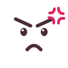

idle · untouched
drag_indicator 00:00
00:00
Celeste
Farewell, golden strawberryidle · hovered (grip appears, lift + tilt)
drag_indicator 2:20:31
2:20:31
Dark Souls III
Soul Level 1 Nameless Kingrunning · pinned · 3h+ (grumpy face, washi tape)
drag_indicator3:12:44

Elden Ringpush_pin
Malenia, no summonswith counter
drag_indicator
Super Mario 64
All stars87/ 120
4:01:10won (sticker, flat lip, play disabled)
drag_indicator1:15:09★
Hollow Knight
Pantheon of Hallownestlong text (~80 chars) truncates with ellipsis, full text in title + tooltip
drag_indicator0:48:02
The Legend of Zelda: Tears of the Kingdom — Master Mode community randomizer edition
All 152 shrines, no fast travel, no paraglider until Ganondorf, three hearts maximum the entire runediting inline
drag_indicator1:48:02
Cuphead
Expert, every bossdragging · drop target
drag_indicator0:52:40
Hades
Heat 16 clear